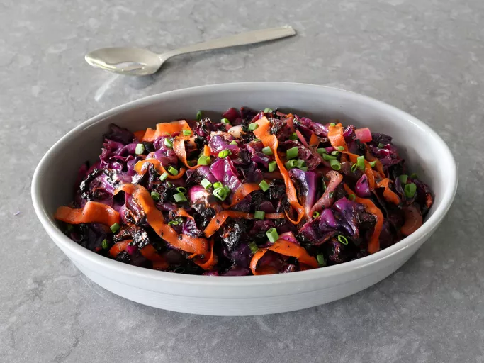

Charred Red Cabbage and Carrot Salad

This charred red cabbage and carrot salad, made by lightly charring vegetables under the broiler, is seasoned with garam masala, honey, and rice vinegar.
It's surprisingly delicious—the slight bitterness from charring amplifies all the sweet and savory tastes.
It makes a stunning side dish, or even a supper main dish all on its own, with only a fried egg and toast on the side.
Ingredients:
- 2 tablespoons vegetable oil, divided
- 2 1/2 pounds red cabbage - halved, cored, and cut into 1-inch slices
- 1/2 red onion, thickly sliced
- 2 large carrots
- 1 teaspoon kosher salt, plus more to taste
- 1 teaspoon garam masala or curry powder
- 1/4 teaspoon cayenne pepper (optional)
- 1 tablespoon honey, or to taste
- 1/4 cup seasoned rice vinegar
- 2 tablespoons olive oil
Steps:
- Line a baking sheet with foil, and grease with a few teaspoons of vegetable oil. Arrange cabbage slices, cut side up if possible, on the sheet, and drizzle remaining vegetable oil evenly over cabbage.
- Set an oven rack about 7 inches from the heat source and preheat the oven’s broiler.
- Broil until the surface of cabbage is lightly charred, 4 to 6 minutes. Times will vary depending on your oven, so watch closely during each charring step.
- Broil until the surface of cabbage is lightly charred, 4 to 6 minutes. Times will vary depending on your oven, so watch closely during each charring step.
- Once both sides of cabbage are lightly charred, scatter over sliced onions and use a vegetable peeler to make long, thick strips of carrot over the top. Arrange carrot strips evenly on top, and return pan to the broiler.
- Broil until carrots and onions begin to soften, about 3 minutes.
- Broil until carrots and onions begin to soften, about 3 minutes.
- Return pan to the broiler; broil until cabbage is tender, and is charred to your liking, a few minutes more.
- Transfer into a bowl, and dress with honey, vinegar, and more salt if needed. Stir in olive oil and green onions. Serve warm, room temperature, or cold.